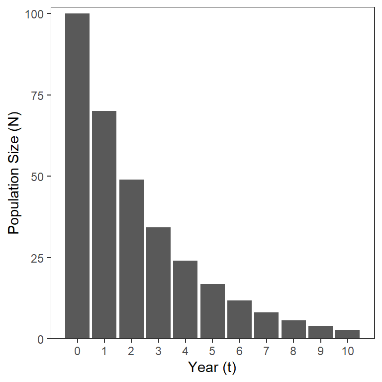
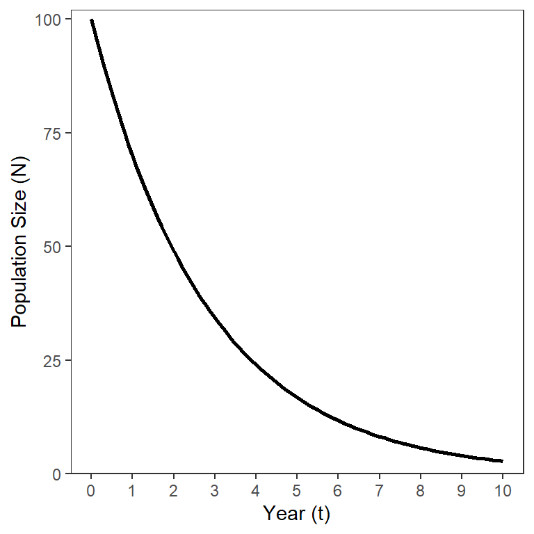
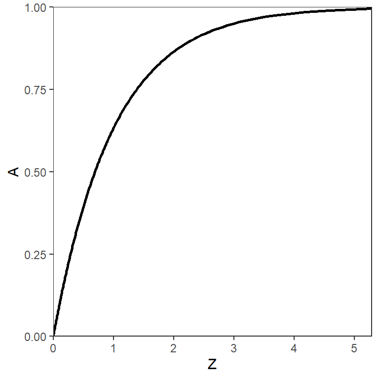
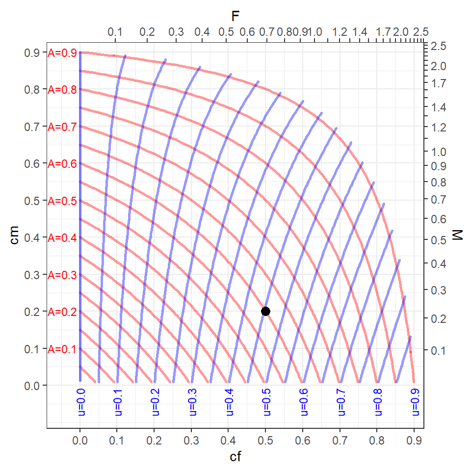
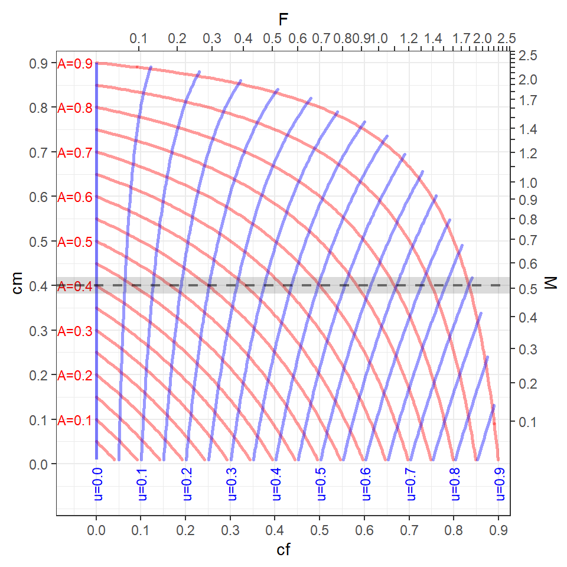
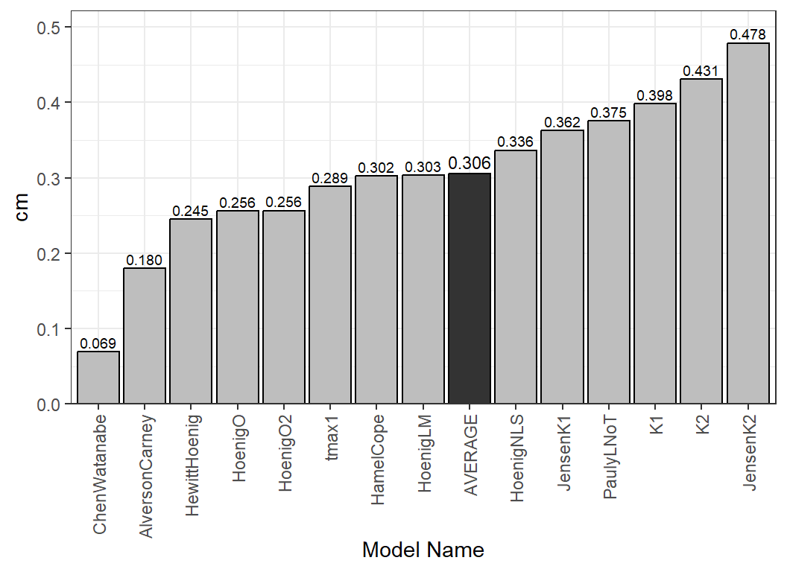

Warning
This is a work-in-progress.
Introduction
Fish within a given population die, either due to fishing (i.e., harvest or extraction, but may also include catch-and-release mortality) or due to reasons not related to fishing. Mortality due to the act of fishing is called fishing mortality, whereas mortality due to all other sources is traditionally called natural mortality. The combination of these two sources is referred to as total mortality. Rates of these types of mortality may be computed on different scales, resulting in estimates with different (or no) meanings, interpretations, and symbols. Understanding these different estimates, and their relationships, can be confusing, especially when working within yield-per-recruit (YPR) and dynamic pool (DP) models. Herein, we explain the more common rates used in fisheries, how they are implemented in rFAMS, and how they may be estimated for use in rFAMS.
The following packages are used in this article.
Definitions
Fisheries Types
Ricker (1975) defined two types of fisheries with respect to estimating rates of mortality. A Type-1 fishery is when mortality due to fishing occurs separately from mortality due to other natural causes. This type of fishery occurs most often when the open harvest season is very short, likely days or only a few weeks. When modeling a Type-1 fishery it is customary to “start” the annual period when fish mortality begins so that fishing mortality occurs before natural mortality during the modeled annual period. A Type-2 fishery is when mortality due to fishing and other natural causes occur together. This type of fishery occurs when the open harvest season is prolonged, often occupying much of the annual period. These definitions are generally approximations to most real fisheries. However, Type-2 fisheries are common in many (but not all) recreational sport fisheries.
Some mortality rates are computed differently depending on whether a Type-1 or Type-2 fishery is a better approximation of reality. These differences will be described where appropriate in the next section.
Definitions to Remember
- Type-1 Fishery – the occurrence of fishing mortality occurs separately from natural mortality (i.e., don’t occur at same time).
- Type-2 Fishery – the occurrence of fishing and natural mortality overlap (i.e., occur at same time).
Mortality Rates
The simplest form of mortality to understand is annual total mortality rate, which is commonly symbolized with . Annual total mortality is the proportion of a population present at the beginning of an annual period (e.g., year) that dies before the start of the next annual period, regardless of the source of that death. If the size of the population () is known at the beginning of two successive periods,1 then is the difference between those values (i.e., number of deaths) divided by the value at the beginning of the annual period; i.e.,
where is the population size at time .2
Closely related to is , the annual total survival rate or the proportion of a population present at the beginning of an annual period that survives to the start of the next annual period; i.e.,
Individuals can only either survive or die during the annual period so , which, by rearrangement, means and .
The annual rates expressed by and are easy to interpret. For example, an of 0.30 means that 30% of the population alive at the start of the annual period was dead by the end of the annual period. Of course, if is 0.30 then is 0.7 which meams that 70% of the population alive at the start of the annual period survived to the start of the next annual period.
Equation 2 can be rearranged to solve for and then, by substituting subsequent solutions over annual time steps, a formula for the population size at annual steps of time is obtained,3
The model in Equation 3 shows that the number in a cohort (i.e., same group) that starts with individuals will decline exponentially over time (Figure 1).

As stated above, is easy to interpret. Unfortunately though, cannot (generally) be separated into the two component sources of fishing and natural mortality. The reason for this difficulty is that these two sources of mortality compete with each other over the course of the annual period. In other words, a fish that is caught (i.e., suffered fishing mortality) early in the annual period is not “available” to die of natural causes later in that annual period (and vice versa).
The continuous analog to the discrete population model in Equation 3 is
which is derived from integrating the model where the negative rate of change (i.e., decline) of the size of the population over time is proportional to the size of the population at that time
where is the instantaneous total mortality rate. This model also shows an exponential, but continuous, decline in over time (Figure 2).

Unfortunately, is not directly interpretable; i.e., the values don’t directly relate to any easily described characteristic of the size of the population. However, is directly related to by
as can be seen by comparing Equation 3 and Equation 4 and then simplifying. The relationship between and is logarithmic (Figure 3). Further note that is between 0 and 1 (i.e., it is a proportion), whereas is only positive (i.e., between 0 and ).

The annual total mortality rate () is directly related to other mortality parameters that will be defined further below; i.e.,
Why would one use the uninterpretable when it can be converted to the interpretable ? The main value of the continuous population model is that in any given “instant” of time fish can only die from one source of mortality. Thus, fishing and natural mortality do not “compete” in these “instants.” This results in fishing and natural mortality summing to total mortality on the continuous (or instantaneous) scale. Thus,
where is the instantaneous natural mortality rate and is the instantaneous fishing mortality rate.
As with , and are not interpretable. As shown in Equation 5, can be directly converted to . Similar calculations can be performed with and , but care must be taken to carefully interpret the result.
The conditional natural mortality rate () is calculated from with
and represents the annual natural mortality rate if fishing mortality did not exist. This definition may make more sense by considering the following two things. First, as with the conversion from to , is the process for converting instantaneous rates ( and ) to annual rates ( and ). Second, is computed for a theoretical “instant” where only natural, and not fishing, mortality occurred. Thus, this conversion calculation acts as if only natural mortality happens in all of the “instants” that are converted to the annual rate.
Similarly, conditional fishing mortality rate is computed from with
and represents the annual fishing mortality rate if natural mortality did not exist.
All mortality rates discussed thusfar – , , , , , and – are computed the same way regardless of whether one is considering a Type-1 or Type-2 fishery. The annual expectations of death due to fishing (i.e., the exploitation rate) and the expectation of natural death are two more measures of mortality to be considered, but how they are calculated depends on the type of fishery.
The annual exploitation rate () is the proportion of the population alive at the start of the annual period that died due to fishing (i.e., harvest, but may include catch-and-release mortality). Similarly, the expectation of natural death () is the proportion of the population alive at the start of the annual period that died due to causes other than fishing. In a Type-1 fishery is the same a and is or .
Ricker (1975) showed that, for a Type-2 fishery, the instantaneous and annual rates are proportional such that the ratio of “fishing to total mortality” is the same on the annual and instantaneous scales; i.e.,
This can be rearranged to show that
Thus, the annual exploitation rate is the portion of the annual total mortality rate () that is due to fishing or the proportion of the population alive at the start of the annual period that died due to fishing. For example, suppose that =0.5 and =0.7 such that4 =0.5+0.7=1.2 and5 =0.70. Thus, 70% of this population of fish died during the annual period. Now,6 0.70=0.29. Thus, 29% of this population of fish died due to fishing during the annual period.
The same proportionality holds for natural mortality; i.e.,
Thus,
With arguments similar to those for , the annual expectation of death is the proportion of the population alive at the start of the annual period that died due to causes other than fishing.
Definitions to Remember
- Annual total mortality rate () – proportion of fish alive at the beginning of annual period that are not alive at the end of the annual period.
- Annual total survival rate () – proportion of fish alive at the beginning of annual period that are still alive at the end of the annual period.
- Conditional annual natural mortality rate () – proportion of fish alive at the beginning of an annual period that are not alive at the end of the annual period due to non-fishing reasons assuming no fishing-related mortality occurred.
- Conditional annual fishing mortality rate () – proportion of fish alive at the beginning of an annual period that are not alive at the end of the annual period due to fishing assuming no natural mortality occurred.
- Annual exploitation rate () – proportion of fish alive at the beginning of the annual period that died during the annual period due to fishing (i.e., harvest).
- Annual expectation of natural death () – proportion of fish alive at the beginning of the annual period that died during the annual period due to causes other than fishing.
- Instantaneous total mortality rate (Z) – no interpretable definition.
- Instantaneous natural mortality rate (M) – no interpretable definition.
- Instantaneous fishing mortality rate (F) – no interpretable definition.
Methods for estimating these rates are discussed in the Estimation section below. Relationships between these rates are discussed next.
Relationships
The YPR and DP functions in rFAMS require the user to articulate values for cf and cm but those models generally use F, M, Z, A, and S in their calculations and, in our experience, most users examine the model results relative to u (or cf). Thus, it is important to understand each of the rates discussed in the previous section and how they are related to each other. The relatoinships discussed in this section will be for a Type-2 fishery, as that is the most prevalent type of fishery used in rFAMS.
Figure 4 helps demonstrate these relationships from the position of choosing values of and , as is done in rFAMS. Some things to consider when examining this plot.
- The tickmarks and labels on the top and bottom axes of this plot show how and are related (though Equation 9). For example, =0.5 is approximately equal to =0.7 (which can be confirmed by inverting Equation 9 such that -log(1-0.5)=0.69).
- Similarly, the tickmarks and labels on the left and right axes show how and are related (through Equation 8).
- The curving red lines are “contours” of equal values of , which are labelled to the left of every-other contour. For example, if
cf=0.5 andcm=0.2, then is approximately 0.6 (which can be confirmed with 0.5+0.2-0.5x0.2 from Equation 6).7 - The curving blue lines are “contours” of equal values of , which are labelled at the bottom of every-other contour. For example, if
cf=0.5 andcm=0.2 then is approximately 0.45 (which can be confirmed from Equation 10 and approximate values with =0.45).8

It should be noted that the “data” required to make Figure 4 was truncated to include only values of because, while not impossible, it would be rare to have more than 90% of the fish die in an annual period. Under this assumption, values of and that are in the upper-right corner of Figure 4 result in values of that are largely unrealistic. One should consider this in situations where multiple combinations of and are modeled.
In our experience, it is common for users to model YPR or DPM across a variety of values of , which are generally under the control of the fisheries manager, at a constant value (or a few constant values) of , which generally is not under the control of the fisheries manager. For example, consider the situation with and values of that range from 0.1 to 0.9 in steps of 0.1 (gray horizontal line in Figure 5). Visually this suggests that will be modeled from 0.4 to well above 0.9 and will be modeled from 0 to 0.8. If the user wants to restrict the modeling exercise to more realistic values of , say less than 0.8, then they may want to only model from 0 to 0.65. This would, however, restrict the range of modeled to be from 0 to 0.55.

Estimation
Total Mortality
Methods for estimating (and thus ) using catch-at-age data (i.e., catch curves) are described here using functions in the FSA package.
Natural Mortality
A thorough review of methods to estimate is here. One method described therein exploits the generally high correlation between and various life history or abiotic factors to develop simple models for predicting from these other factors. Many of the models described therein were also thoroughly reviewed here with clear recommendations for their use (or not).
Many of these models for estimating from life history or abiotic factors are available in metaM() of FSA. The list of potential methods that can be used and some specifics about the methods, including which life history or abiotic parameters are required for the method, are in the metaM() documentation.
The est_natmort() function in rFAMS performs these same calculations but is designed to work more efficiently with inputs typical to other rFAMS functions. For example, the main YPR and DP models in rFAMS take a list of life history parameters as an input. This list is best created with makeLH() from rFAMS.9
lhex <- makeLH(N0=100,tmax=15,Linf=500,K=0.3,t0=-0.5,LWalpha=-5.613,LWbeta=3.1)If this list is the first argument to est_natmort() then the necessary life history parameters will be extracted for use in models to estimate (and ).10
est_natmort(lhex)
#> method M cm givens
#> 1 HoenigNLS 0.41002265 0.33636478 tmax=15
#> 2 HoenigO 0.29543534 0.25579246 tmax=15
#> 3 HoenigO2 0.29631969 0.25645032 tmax=15
#> 4 HoenigLM 0.36126963 0.30320890 tmax=15
#> 5 HewittHoenig 0.28133333 0.24522330 tmax=15
#> 6 tmax1 0.34060000 0.28865661 tmax=15
#> 7 PaulyLNoT 0.47024562 0.37515122 K=0.3, Linf=50
#> 8 K1 0.50760000 0.39806150 K=0.3
#> 9 K2 0.56300000 0.43050200 K=0.3
#> 10 HamelCope 0.36000000 0.30232367 tmax=15
#> 11 JensenK1 0.45000000 0.36237185 K=0.3
#> 12 JensenK2 0.65100000 0.47847601 K=0.3
#> 13 AlversonCarney 0.19872105 0.18022146 tmax=15, K=0.3
#> 14 ChenWatanabe 0.07181977 0.06930138 tmax=15, K=0.3, t0=-0.5Users of rFAMS will most often use these estimates to get an idea of cm values to use in the YPR and DP modeling. This may be aided by including the average cm (and M) to the bottom of the output with incl.avg=TRUE.
est_natmort(lhex,incl.avg=TRUE)
#> method M cm givens
#> 1 HoenigNLS 0.41002265 0.33636478 tmax=15
#> 2 HoenigO 0.29543534 0.25579246 tmax=15
#> 3 HoenigO2 0.29631969 0.25645032 tmax=15
#> 4 HoenigLM 0.36126963 0.30320890 tmax=15
#> 5 HewittHoenig 0.28133333 0.24522330 tmax=15
#> 6 tmax1 0.34060000 0.28865661 tmax=15
#> 7 PaulyLNoT 0.47024562 0.37515122 K=0.3, Linf=50
#> 8 K1 0.50760000 0.39806150 K=0.3
#> 9 K2 0.56300000 0.43050200 K=0.3
#> 10 HamelCope 0.36000000 0.30232367 tmax=15
#> 11 JensenK1 0.45000000 0.36237185 K=0.3
#> 12 JensenK2 0.65100000 0.47847601 K=0.3
#> 13 AlversonCarney 0.19872105 0.18022146 tmax=15, K=0.3
#> 14 ChenWatanabe 0.07181977 0.06930138 tmax=15, K=0.3, t0=-0.5
#> 15 AVERAGE 0.37552622 0.30586468If desired, the average cm can be isolated by assigning the est_natmort() result to an object and then selecting the last item in the cm variable.
res <- est_natmort(lhex,incl.avg=TRUE)
avg_cm <- res$cm[nrow(res)]
avg_cm
#> [1] 0.3058647Individual or sets of models can be chosen with method=. For example, using only the HamelCope model is illustrated below.
est_natmort(lhex,method="HamelCope")
#> method M cm givens
#> 1 HamelCope 0.36 0.3023237 tmax=15The names of available models along with their required life history or abiotic inputs and citations are in the documentation for metaM() from FSA.
Multiple models can be used by including the method names in a vector.
est_natmort(lhex,method=c("HamelCope","HoenigNLS"))
#> method M cm givens
#> 1 HamelCope 0.3600000 0.3023237 tmax=15
#> 2 HoenigNLS 0.4100226 0.3363648 tmax=15Some models require inputs that are not contained in the life history list and, thus, need to be explicitly defined within est_natmort(). For example, the "QuinnDeriso" model requires an estimate of the proportion of individuals that survive to the maximum age to be given in PS=.11
est_natmort(lhex,method="QuinnDeriso",PS=0.02)
#> method M cm givens
#> 1 QuinnDeriso 0.2608015 0.2295662 PS=0.02, tmax=15This same calculation can be made without giving the life history list as long as all of the required inputs are specifically declared.
est_natmort(method="QuinnDeriso",tmax=15,PS=0.02)
#> method M cm givens
#> 1 QuinnDeriso 0.2608015 0.2295662 PS=0.02, tmax=15Some common methods have been grouped together such that all methods in the group may be chosen by giving the “group name” as the first argument to est_natmort().12 For example, the methods used in the original FAMS software are in a group called "FAMS". Some of these methods use inputs that are not in the life history list and must then be specifically declared in est_natmort().
est_natmort(lhex,method="rFAMS",PS=0.02,Winf=5000,Temp=9,incl.avg=TRUE)
#> method M cm givens
#> 1 HoenigNLS 0.41002265 0.33636478 tmax=15
#> 2 HoenigO 0.29543534 0.25579246 tmax=15
#> 3 HoenigO2 0.29631969 0.25645032 tmax=15
#> 4 HoenigLM 0.36126963 0.30320890 tmax=15
#> 5 HewittHoenig 0.28133333 0.24522330 tmax=15
#> 6 tmax1 0.34060000 0.28865661 tmax=15
#> 7 PaulyLNoT 0.47024562 0.37515122 K=0.3, Linf=50
#> 8 K1 0.50760000 0.39806150 K=0.3
#> 9 K2 0.56300000 0.43050200 K=0.3
#> 10 HamelCope 0.36000000 0.30232367 tmax=15
#> 11 JensenK1 0.45000000 0.36237185 K=0.3
#> 12 JensenK2 0.65100000 0.47847601 K=0.3
#> 13 AlversonCarney 0.19872105 0.18022146 tmax=15, K=0.3
#> 14 ChenWatanabe 0.07181977 0.06930138 tmax=15, K=0.3, t0=-0.5
#> 15 AVERAGE 0.37552622 0.30586468Finally, Figure 6 illustrates how one might examine multiple estimates of with the mean highlighted.13
res <- est_natmort(lhex,incl.avg=TRUE)
ggplot(data=res,mapping=aes(x=reorder(method,cm),y=cm)) +
geom_bar(mapping=aes(fill=method=="AVERAGE"),
stat="identity",color="black") +
geom_text(mapping=aes(label=formatC(cm,format="f",digits=3),
size=method=="AVERAGE"),vjust=-0.35) +
scale_y_continuous(expand=expansion(mult=c(0,0.09))) +
scale_x_discrete(name="Model Name") +
scale_fill_manual(values=c("TRUE"="gray20","FALSE"="gray")) +
scale_size_manual(values=c("TRUE"=3,"FALSE"=2.5)) +
theme_bw() +
theme(axis.text.x=element_text(angle=90,vjust=0.5,hjust=1),
legend.position="none")
Fishing Mortality
Note
To be completed.